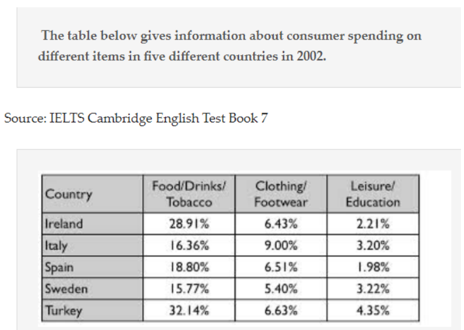

雅思写作课程-第四课-表格练习

修改前
The table provides information about the consumer spending on different items among five different countries in 2002.
The percentage of Turkey’s consumer spending on Food/Drinks/Tobacco was highest. Additionally, the percentage for Sweden’s consumer spending on Food/Drinks/Tobacco was lowest.
Both of this countries’ consumer spending on Leisure/Education were much lower between these items. Among five countries, the percentage of Spain’s consumer spending on Leisure/Education was the lowest, which was 1.98%.
The percentage of Italy’s consumer spending on Clothing/Footwear was highest.Ireland and Turkey has nearly the same percentage of consumer spending on Clothing/Footwear.Ireland’s percentage was 6.43%. Besides, Turkey’s percentage was 6.63%.
Italy’s percentage of Clothing/Footwear was 9% which was noticeably higher than other countries.
Sweden’s percentage of Food/Drinks/Tobacco and Clothing/Footwear among 5 countries were lowest. And percentage of Clothing/Footwear was 5.4%.
In conclusion, the table give us exactly percentage of different items between Ireland、Italy、Spain、Sweden and Turkey.
The table provides information about consumer spending on different items in five different countries in 2002.
Turkey had the highest percentage of consumer spending on Food/Drinks/Tobacco, while Sweden had the lowest percentage in this category.
Both of these countries had significantly lower consumer spending on Leisure/Education compared to the other items. Among the five countries, Spain had the lowest percentage of consumer spending on Leisure/Education, which was 1.98%.
Italy had the highest percentage of consumer spending on Clothing/Footwear. Ireland and Turkey had nearly the same percentage of consumer spending on Clothing/Footwear, with Ireland’s percentage being 6.43% and Turkey’s percentage being 6.63%.
Italy’s percentage of consumer spending on Clothing/Footwear was 9%, which was noticeably higher than the other countries.
Sweden had the lowest percentages among the five countries for both Food/Drinks/Tobacco and Clothing/Footwear, with a percentage of 5.4% for Clothing/Footwear.
修改后
The table provides information about consumer spending on different items in five different countries in 2002.
Turkey had the highest percentage of consumer spending on Food/Drinks/Tobacco, while Sweden had the lowest percentage in this category.
Both of these countries had significantly lower consumer spending on Leisure/Education compared to the other items. Among the five countries, Spain had the lowest percentage of consumer spending on Leisure/Education, which was 1.98%.
Italy had the highest percentage of consumer spending on Clothing/Footwear. Ireland and Turkey had nearly the same percentage of consumer spending on Clothing/Footwear, with Ireland’s percentage being 6.43% and Turkey’s percentage being 6.63%.
Italy’s percentage of consumer spending on Clothing/Footwear was 9%, which was noticeably higher than the other countries.
Sweden had the lowest percentages among the five countries for both Food/Drinks/Tobacco and Clothing/Footwear, with a percentage of 5.4% for Clothing/Footwear.
In conclusion, the table provides precise percentages of consumer spending on different items in Ireland, Italy, Spain, Sweden, and Turkey.
修改的地方

时态
“had” 是过去完成时态的形式。过去完成时态表示过去某个时间点之前发生的动作或事件。它由助动词 “had” 加上动词的过去分词构成。
以下是一些例句来展示过去完成时态的用法：
- 我们在他到达之前已经吃过晚饭了。 (We had already eaten dinner before he arrived.)
- 她告诉我她已经完成了作业。 (She told me she had finished her homework.)
- 我们在出发前已经订好了机票。 (We had already booked the tickets before we departed.)
在这些例句中，”had” 表示在过去某个时间点之前发生的动作或事件。过去完成时态在描述过去的时间顺序、前后关系以及一个动作在另一个动作之前完成的情况时很常见。